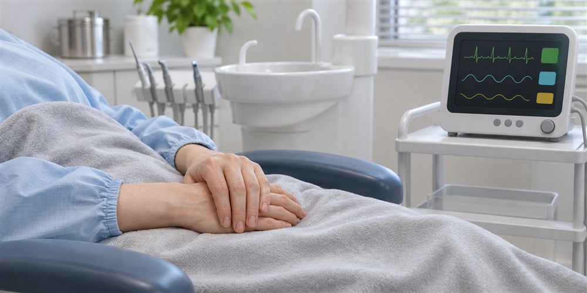
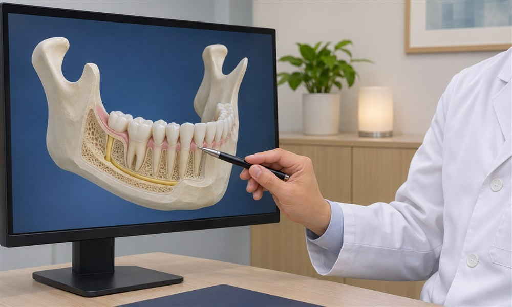
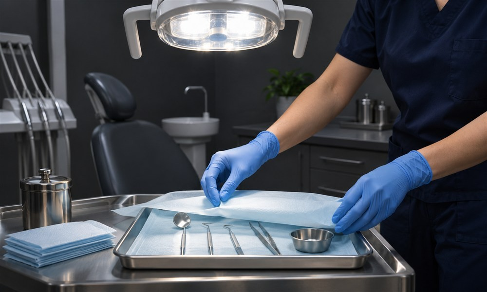
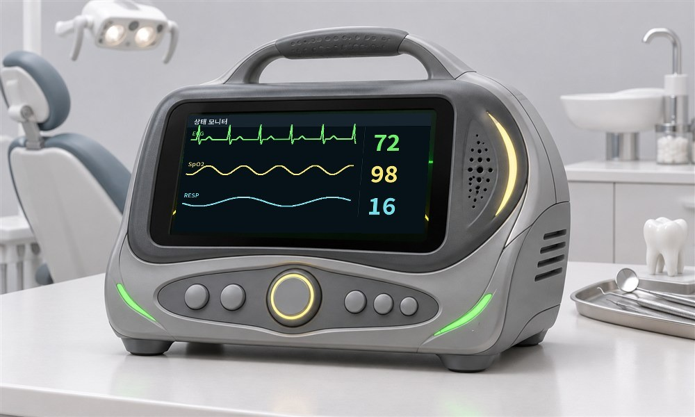
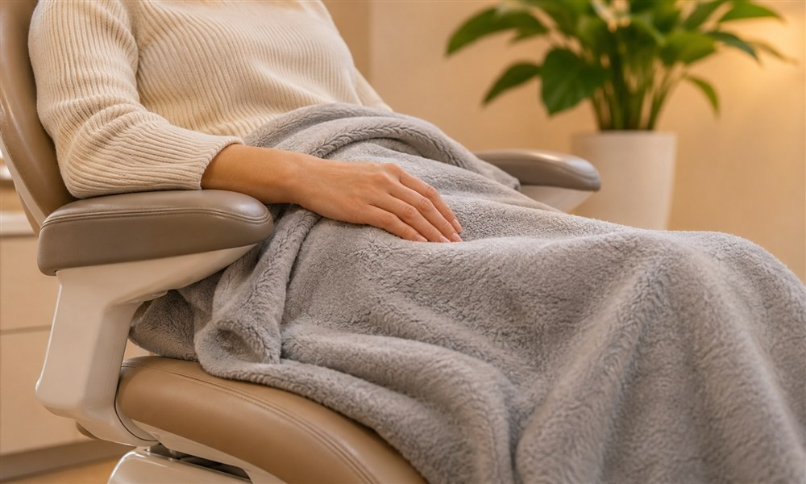
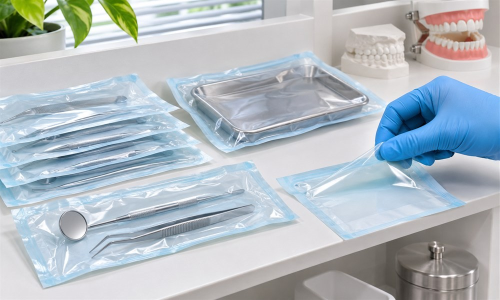

치과 치료가
두려운 분들을 위한
의식하진정요법 (수면)
치과 방문이 부담스러운 분은 긴장을 낮추는 진정 방법을 상담할 수 있습니다. 적용 여부와 방식은 건강 상태를 확인한 뒤 결정합니다.
진정 치료는 긴장을 낮춘 상태에서 진행되며, 적용 여부와 회복 과정은 건강 상태를 확인한 뒤 안내합니다.

새봄결치과
수면 치과치료 과정
진정 상태에서는 불안과 긴장을 덜 느낄 수 있으며, 의료진이 반응과 회복 상태를 살피며 안전하게 진행합니다.
수면 임플란트
치료대상
치료 시간
전신 건강이나 연령 때문에 긴 진료가 부담스러운 분
내원 횟수
내원 일정과 필요한 진료 범위를 함께 조율하고 싶은 분
구역질
구역 반응이 심해 일반적인 치과 처치가 어려운 분
치과 공포증
치과 진료를 앞두고 불안과 긴장을 크게 느끼는 분
수면 임플란트 핵심기술

01
체계적인 수술 계획
디지털 CT 정밀 진단 시스템

02
10년 이상의 임상경험
수면치과치료 노하우와 기술력

03
안전 최우선 시스템
실시간 모니터링 시스템

치과 공포증이 있다면,
편안한 치과 치료
수면(의식하진정요법) 임플란트
의식하 진정은 의료진이 반응과 호흡을 관찰하며 긴장을 낮추는 방법입니다. 스스로 호흡하는 상태를 유지하도록 관리하지만 반응에는 개인차가 있어 관찰이 필요합니다. 진정 정도와 적용 여부를 상담에서 정하고, 치료를 마친 뒤에도 회복 상태를 확인합니다. 진정 치료는 졸린 듯 편안한 상태에서 진행되며, 의료진이 호흡과 반응을 계속 확인합니다. 종료 뒤 회복 상태를 살핀 후 귀가 방법과 주의사항을 안내합니다.
수면 (의식하진정요법)
임플란트 치료 시
사용하는 약물은 뭔가요?
진정 치료를 계획할 때는 현재 건강과 복용 중인 약, 이전 마취 경험을 먼저 확인합니다. 필요한 경우 의료진이 진정 약제를 선택해 상태를 관찰하며 투여합니다. 약제의 효과와 회복 속도에는 차이가 있으므로 처치가 끝난 뒤에도 반응과 귀가 가능 여부를 점검합니다.

새봄결치과
수면치료 Q&A
의료진이 자주 받는 질문을 항목별로 설명합니다.
전신마취와 의식하 진정은 의식의 정도와 호흡 관리 방식이 다릅니다. 의식하 진정에서는 자발 호흡과 자극에 대한 반응을 살피면서 약제를 조절합니다. 건강 상태와 처치 범위에 따라 적합한 방법이 달라지므로, 상담에서 구분해 설명하고 필요한 관찰 장비를 갖춰 진행합니다.
진정 약제의 효과가 줄어든 뒤에도 판단력이나 균형감각이 바로 회복되지 않을 수 있습니다. 의료진이 회복 상태를 확인한 다음 보호자와 함께 귀가하도록 안내합니다. 진료 후에는 운전과 기계 조작을 피하고, 안내받은 시간 동안 휴식과 관찰을 이어가야 합니다.
진정 진료 전 검사와 상담이 어떻게 이뤄지는지, 상태를 관찰할 장비와 회복 공간이 준비돼 있는지 살펴보세요. 진정 중에는 호흡과 반응의 변화에 대응할 수 있는 의료진과 직원의 준비도 필요합니다. 치료가 끝난 뒤 회복을 확인하고 귀가 시 주의사항을 설명하는지도 함께 확인하는 것이 좋습니다.